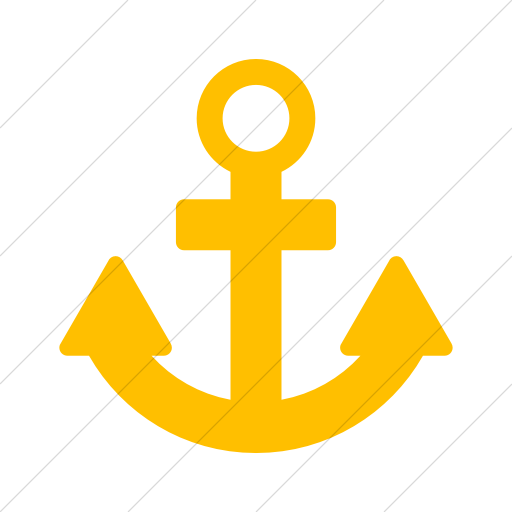

-
SER TRAVESÍA ANCLA ROJA
EMBARQUE
Los jóvenes que han respondido afirmativamente a la invitación del Lanzamiento asisten a la convivencia de un fin de semana llamada Embarque. Con esta convivencia dan inicio al 14 primer año de formación o llamada también TRAVESÍA ROJA. En ella se hace un énfasis especial en el valor de la PERSONALIZACIÓN: conocimiento propio y autorrealización de la persona.
TRAVESÍA ANCLA ROJA
Es el primer año de formación personal y grupal en el Movimiento. La finalidad de esta primera etapa es que el joven desarrolle sus capacidades personales a través de la profundización en la personalización, integración en el grupo y exigencias de la fe. A la formación y a la acción se dedica un 70% y 30% del tiempo respectivamente. Con una palabra se podría definir esta etapa como la del “SER”.
ESCUELA DE LÍDERES NIVEL I
Esta será la primera experiencia de puerto larga que vive el tripulante en el Movimiento. Tiene una duración de siete días con otros grupos del país. En ella se manifiesta el aprendizaje adquirido durante el primer año de la TRAVESÍA ANCLA ROJA y se dispone a emprender rumbo a nuevas profundidades.
Esta será la primera experiencia de puerto larga que vive el tripulante en el Movimiento. Tiene una duración de siete días con otros grupos del país. En ella se manifiesta el aprendizaje adquirido durante el primer año de la TRAVESÍA ANCLA ROJA y se dispone a emprender rumbo a nuevas profundidades.
SER TRAVESÍA ANCLA ROJA
SER TRAVESÍA ANCLA ROJA
Es el primer año de formación personal y grupal en el Movimiento. La finalidad de esta primera etapa es que el joven desarrolle sus capacidades personales a través de la profundización en la personalización, integración en el grupo y exigencias de la fe. A la formación y a la acción se dedica un 70% y 30% del tiempo respectivamente. Con una palabra se podría definir esta etapa como la del “SER”.
-
SER CON TRAVESÍA ANCLA AZUL
REEMBARQUE
Terminada la Escuela de Líderes Nivel I es importante seguir acompañando al joven. Con esta convivencia de fin de semana, comienza oficialmente la segunda etapa: TRAVESÍA AZUL. En esta etapa se enfatiza en la madurez personal y comunitaria.
TRAVESÍA ANCLA AZUL
La acción de esta etapa está orientada hacia la SOCIALIZACIÓN: se valora la alteridad y la necesidad de relacionarse con otros grupos… de manera que formación y acción se equilibran con un 50% del tiempo, previsto en un Proyecto Personal de Vida. Es la etapa de “SER CON”.
ESCUELA DE LÍDERES NIVEL II
Con esta experiencia de puerto se concluye la segunda travesía. Tiene una duración de cinco días. El joven se encuentra con otros grupos del país. Tiene como finalidad que el joven se concientice y capacite en su tarea formativa de líder cristiano, haciendo énfasis en la formación socio-política sobre el país como respuesta a la fe de la Iglesia.
CAMPAMENTO MISIÓN
Experiencia se le ofrece al joven, en medio de una comunidad que intenta superar situaciones injustas, para que vaya respondiendo según los criterios y madurez que haya adquirido a lo largo del proceso formativo de ANCLA. Tiene una duración de siete a diez días. Es una experiencia que se puede repetir en las siguientes travesías.
SER CON TRAVESÍA ANCLA AZUL
SER CON TRAVESÍA ANCLA AZUL
La acción de esta etapa está orientada hacia la SOCIALIZACIÓN: se valora la alteridad y la necesidad de relacionarse con otros grupos… de manera que formación y acción se equilibran con un 50% del tiempo, previsto en un Proyecto Personal de Vida. Es la etapa de “SER CON”.
-
SER PARA TRAVESÍA ANCLA AMARILLA
ALTAMAR
Es la convivencia que abre las puertas a la tercera etapa, TRAVESÍA AMARILLA. El objetivo es evaluar las metas logradas y proyectarse hacia nuevos compromisos. Esta convivencia se realiza en un fin de semana. Y tiene un énfasis de encuentro con Jesucristo Vivo y Misionero.
TRAVESÍA ANCLA AMARILLA
Realizada la convivencia de ALTAMAR comienza finalmente la TRAVESÍA AMARILLA. Es una etapa intensa y conlleva a dar pasos a un compromiso serio. Es la travesía del COMPROMISO, de la vivencia de una fe y caridad política. En ella se proporciona desde el punto de vista cuantitativo 30% de formación y un 70% de acción. El joven debe ir clarificando y discerniendo su opción vocacional. La finalidad última es la profundización en el sentido de pertenencia a la Iglesia. Es la etapa del “SER PARA”.
ESCUELA DE LÍDERES NIVEL III
La travesía amarilla finaliza con la Escuela de Líderes Nivel III con una duración de cinco días. Tiene por finalidad ofrecer al joven distintos proyectos de vida: matrimonio, vida religiosa, vida sacerdotal, laical, con distintas facetas: educativa, cultural, política, entre otras. Es una Escuela de tinte VOCACIONAL. Aquí el joven esta en la desembocadura del proceso formativo del Movimiento y tiene que ir viendo cuál es su puesto de servicio dentro de la Iglesia y del mundo.
La travesía amarilla finaliza con la Escuela de Líderes Nivel III con una duración de cinco días. Tiene por finalidad ofrecer al joven distintos proyectos de vida: matrimonio, vida religiosa, vida sacerdotal, laical, con distintas facetas: educativa, cultural, política, entre otras. Es una Escuela de tinte VOCACIONAL.
SER PARA TRAVESÍA ANCLA AMARILLA
SER PARA TRAVESÍA ANCLA AMARILLA
Realizada la convivencia de ALTAMAR comienza finalmente la TRAVESÍA AMARILLA. Es una etapa intensa y conlleva a dar pasos a un compromiso serio. Es la travesía del COMPROMISO, de la vivencia de una fe y caridad política. En ella se proporciona desde el punto de vista cuantitativo 30% de formación y un 70% de acción. El joven debe ir clarificando y discerniendo su opción vocacional. La finalidad última es la profundización en el sentido de pertenencia a la Iglesia. Es la etapa del “SER PARA”.